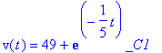
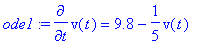
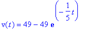
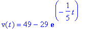
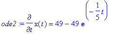
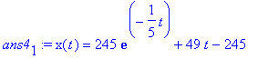
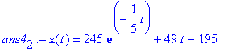

The aim of these note is to get you acquainted with Maple and what it can do for you along with some of the commands. For this I would redo the examples that we have done in class with the comment that the ability to solve problems by hand is important, but if you are pressed for time and you have Maple available you can do it much faster. Let us take up Example 2 on page 12 of your book. If you want to simply solve the differential equation the command for it is dsolve
> dsolve(diff(v(t),t)=9.8-v(t)/5); (Once you hit enter you get the general solution below.)

>
As you might have guessed the expression diff(v(t),t) stands for dv/dt. Now you want to solve the initial value problem mentioned there. For that you proceed as follows. Write down the ode as:
> ode1:=diff(v(t),t)=9.8-v(t)/5;

> ans4[1]:dsolve({ode1,v(0)=0},v(t));

That is what you expected. Now suppose you want to play around with the initial conditions a little bit. Change the initial conditions. Copy and paste the expression ans4[1]:dsolve({ode1,v(0)=0},v(t)); and make the necessary changes, for example you want v(0)=20, so make it.
> ans4[2]:dsolve({ode1,v(0)=20},v(t));

Let us complete the example as we have seen. The next initial value problem in that example can be expressed as follows:
> ode2 := diff(x(t),t)=49*(1-exp(-t/5));
> ans4[1] := dsolve( {ode2, x(0)=0}, x(t));


Now if you want to play around with initial conditions you can consider a new initial condition say x(0)=50.
> ans4[2] := dsolve( {ode2, x(0)=50}, x(t));

Note that if you were dealing with only one ode you need only write: ode:=diff (etc.etc.).